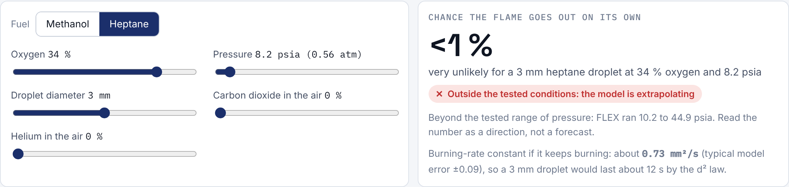

NASA Space Apps 2026 · Flame in Freefall
FlameGap
Where the flight evidence on spacecraft fire ends, and what it means for a Moon base

Data: NASA Physical Sciences Informatics (CC0)1 / 7
NASA Space Apps 2026 · Flame in Freefall
The question
We read all 24 combustion investigations in NASA's PSI archive: 986 test runs, 352 papers and 6.3 TB of raw data, and placed every run by the oxygen and pressure it burned in.
“Because of the pure oxygen atmosphere, the fire spread quickly…”Apollo 1, NASA Office of Safety and Mission Assurance

Cabin oxygen through history against the range of solid-material flight tests.
The answer

Ranked findings

Users weight safety, evidence, mission fit and actionability; the ranking follows. Top of the list:
Predictor

Logistic model on 261 FLEX runs, cross-validated by test date. It shows the nearest real runs and flags extrapolation: the exploration atmosphere is outside every FLEX pressure.
Video lab

Built to be trusted
Next